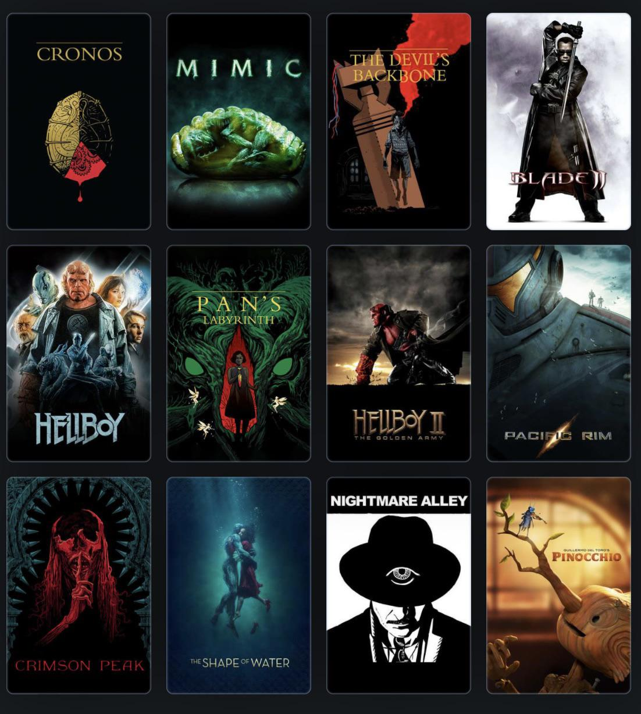
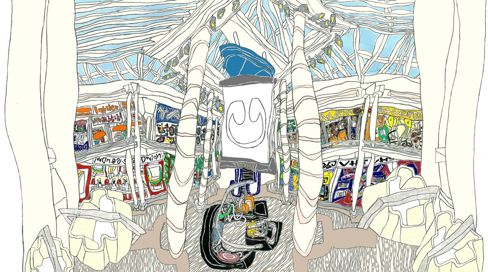
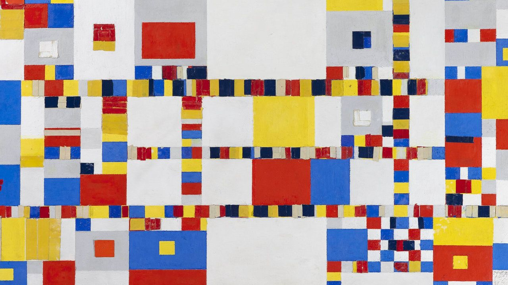

I would say that I am not satisfied with how my page is right now I think I can really change somethings to make it a lot better like I said before it is my first time doing this so I have to be patient but I feel like I can do better maybe in the next assignment I can try a bit harder just because I think I also started this late I should probably give myself time to really take a couple of days to work on this rather than one or two because I saw that my best work comes out more when I take the time to really digest and process what I am creating and how I am creating it. I would really want to play around with css next time because I also think thats where I can really customize what I want my pages to look like. I just hope that as I progress in this class I continue to retain what I am learning because sometimes I get discouraged and forget however I think It will get easier once I get familiar with everything.